A concept for Etsy that lets makers record their process in seconds while they work, and shows that process to buyers in search, where handmade pieces otherwise look like mass-produced copies.
Tap Start a Tella on the maker phone and publish it, then search the buyer phone for "ceramic".
An Etsy search result is a photo, a title and a price. For a handmade ceramic bowl priced at $67, the photo shows a finished bowl on a table, which is also what a $9.99 lookalike shows. Weeks of work by the maker are invisible at the moment the buyer compares the two.
Our question for the SVSD hackathon: how could a listing tell the story of how a product was made?
We sent a survey to Etsy sellers in several rounds and received no responses within the hackathon. We switched to public Reddit threads and seller forums and read discussions about getting noticed, describing your work and competing with cheaper copies. This is not a representative sample, but three themes came up again and again.
Instead of designing a whole feature at once, we split the problem into three questions and answered them in sequence. For each question we built three working prototypes on the same product, the same fictional shop and the same amount of content, so the only difference between them was the option being compared.
Every phone on this page is a working prototype. Click one to try it.
The same story card, in the same position on the listing, told three ways: the stages and hours behind the bowl, close-ups of its details, or the maker's inspiration. We chose labor. Time and effort explain a price directly, every handmade piece has a process even without a personal backstory, and it is the hardest story to fake.
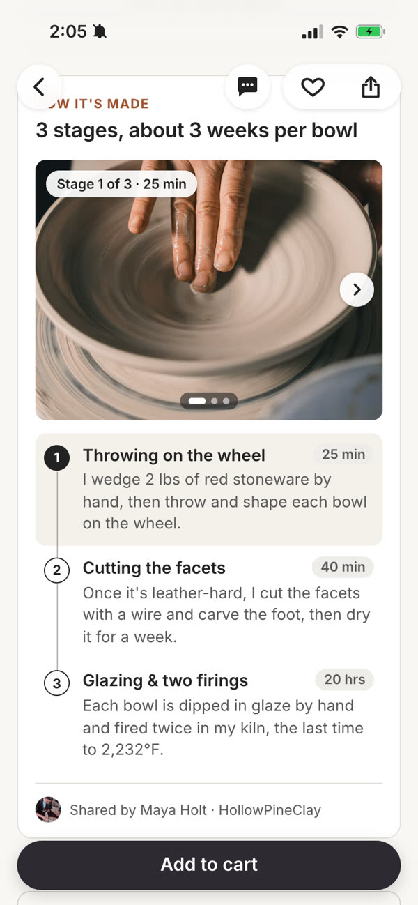
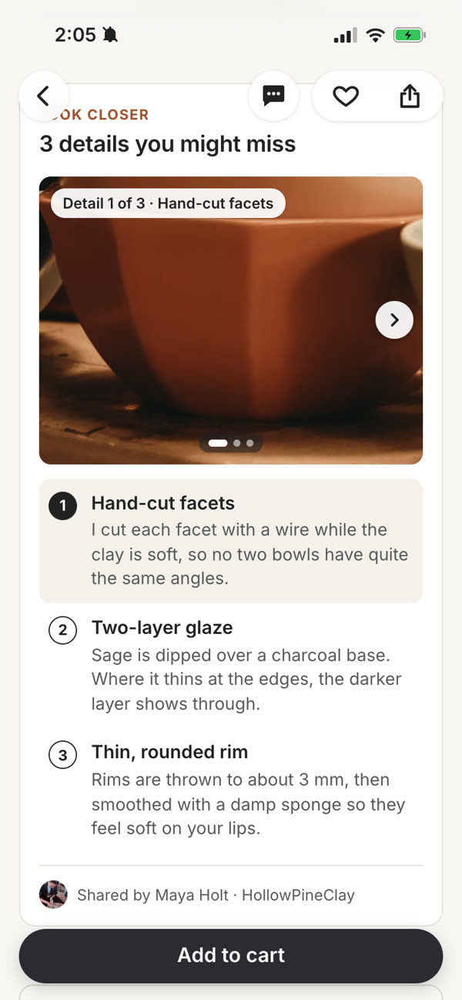
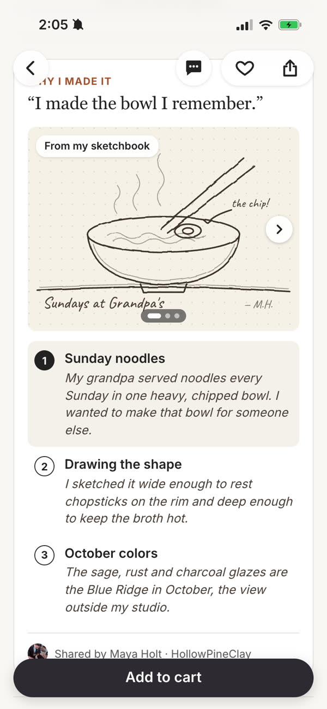
The same labor story in three places: a 3D view on the listing photo, a row of process videos in search, and a maker's gallery page. We compared them on who each one reaches and when.
Video also suited a process that unfolds over weeks better than a still image.
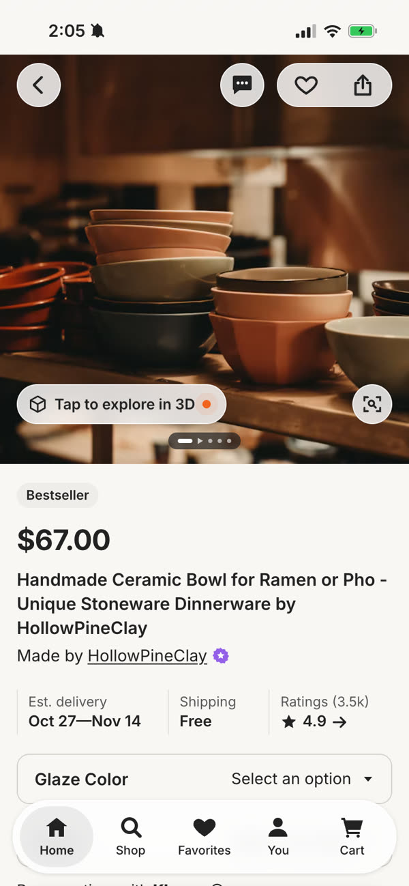
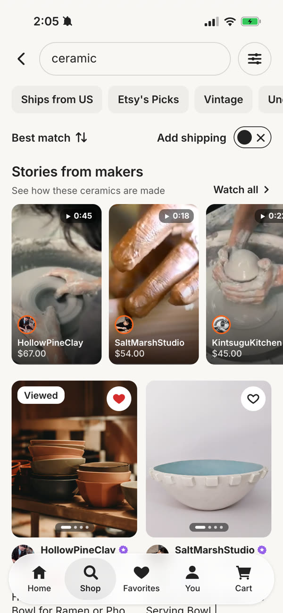
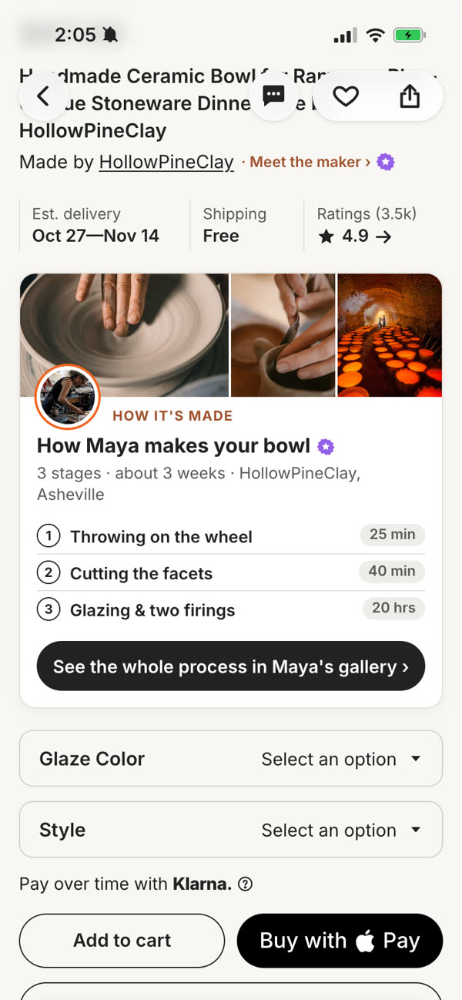
All three seller tools used the same AI step and produced the same kind of story. Only the maker's input changed.
The AI draft asked the least of makers, but it had nothing to work with except photos of the finished bowl. For a labor story, the footage has to be captured during the work.
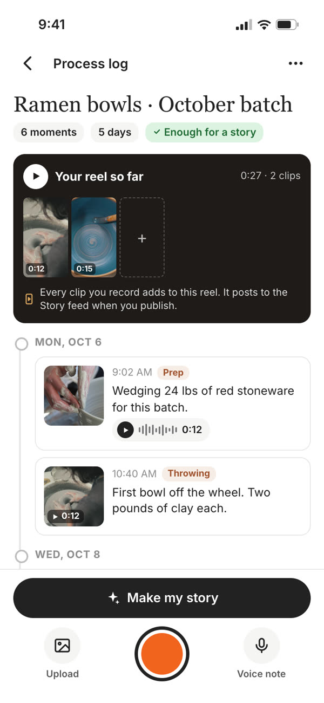
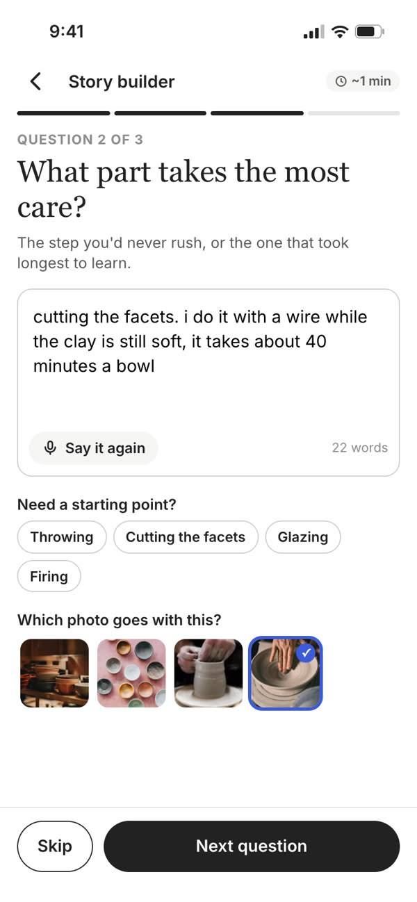
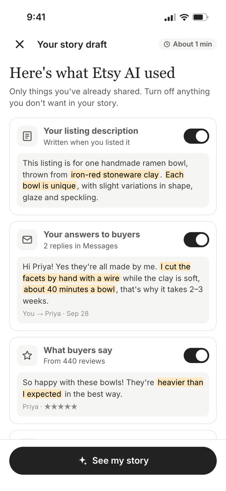
Tella starts from the maker's existing listing in the Etsy Seller app. While working, the maker captures short clips or photos and adds context in whichever way is fastest. When the batch is done, Etsy suggests the key moments and groups them into stages with times. The maker edits captions in their own words, approves, and publishes.
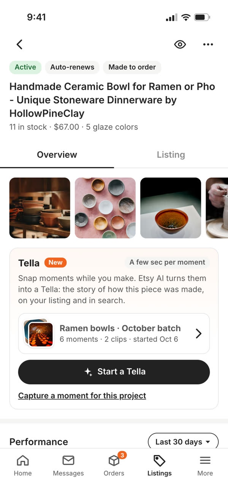
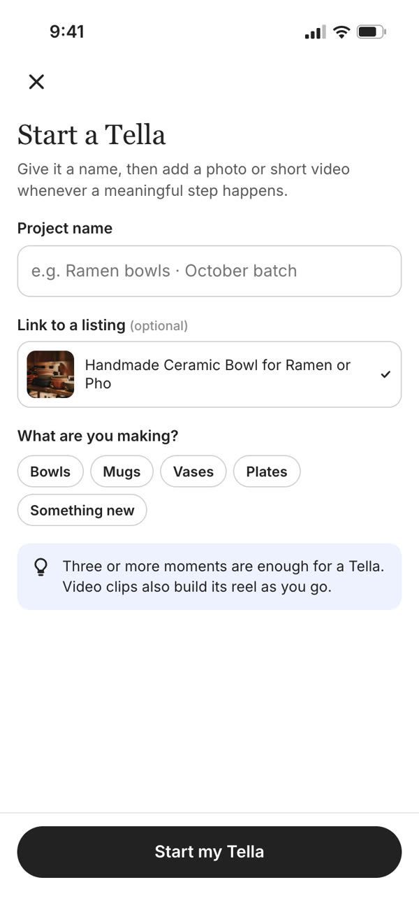
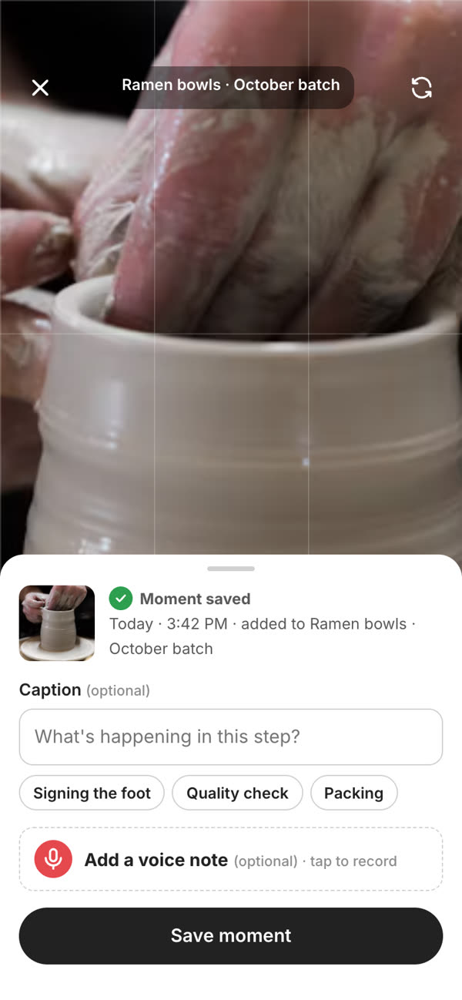
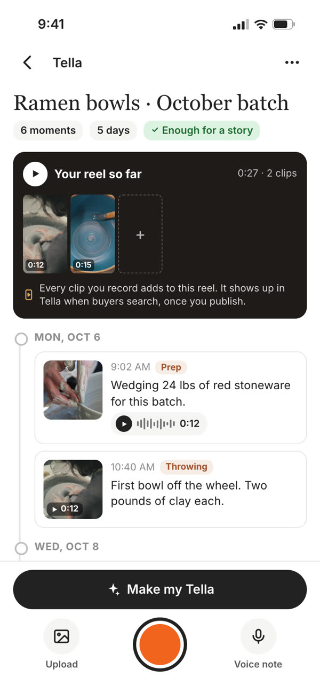
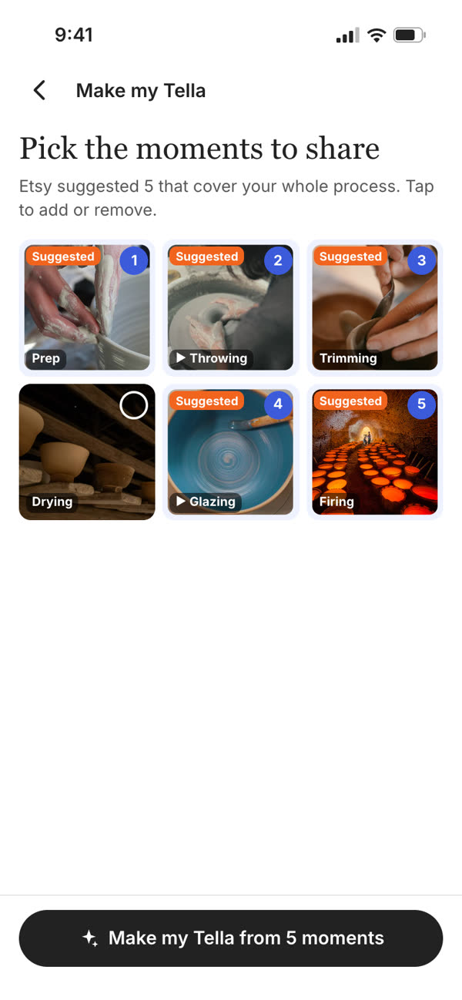
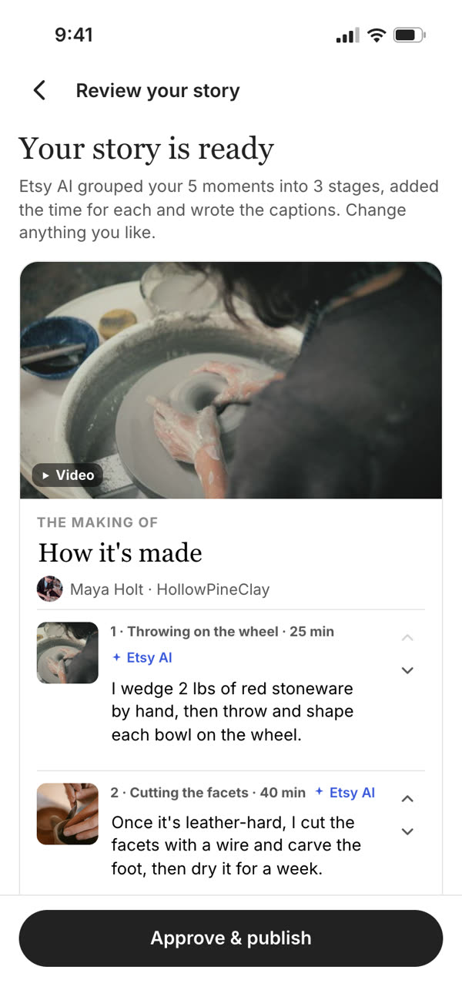
Searching for "ceramic" now opens with a row of Tella videos above the results. A buyer can swipe through a maker's stages, scroll to other makers, and go straight to the listing, where a "How it's made" card shows each stage again next to the price.
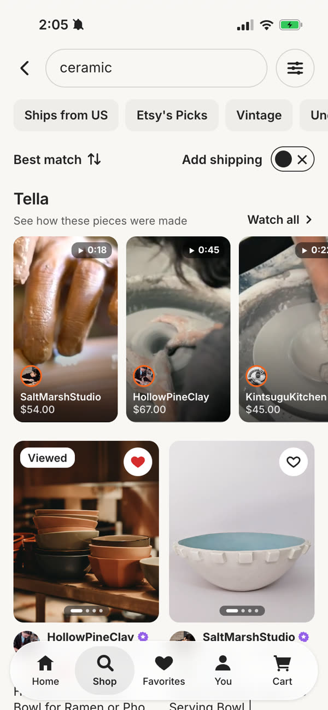
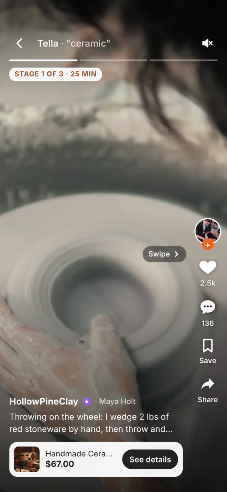
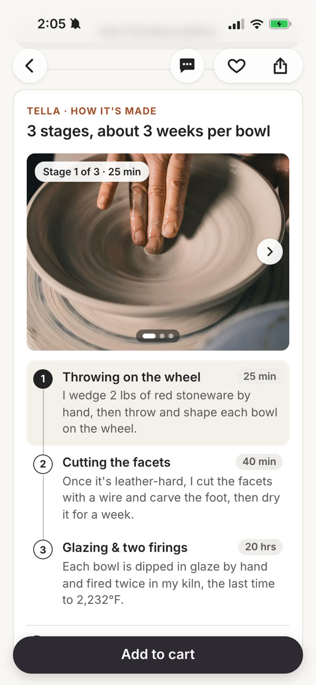
With three days, it was tempting to design the whole feature at once. Fixing everything except one variable meant each prototype answered exactly one question, and each answer narrowed the next. The final design balances what buyers need to see, what makers can realistically do between steps, and what fits Etsy as a marketplace.
Our SVSD hackathon submission: a seven-minute film covering the problem, research, the three decisions and a walkthrough of the prototype.
Concept work for the SVSD hackathon. Not affiliated with Etsy. Shops and makers in the prototypes are fictional.